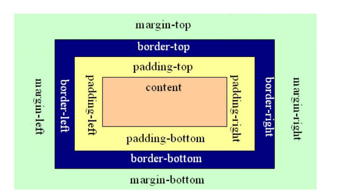

2019年最新经典web前端面试题
62018.09.25 18:57:33字数 1986阅读 58596
![](data:image/svg+xml,%3csvg xmlns='http://www.w3.org/2000/svg' width='1em' height='1em' fill='currentColor' aria-hidden='true' focusable='false' class='js-evernote-checked' data-evernote-id='210'%3e%3cpath d='M751.144277 307.2l-123.016533-238.933333h159.778133a81.92 81.92 0 0 1 59.1872 25.258666l160.256 167.492267A27.306667 27.306667 0 0 1 987.620011 307.2h-236.475734z m270.506667 111.547733L640.927744 946.039467a27.306667 27.306667 0 0 1-48.128-24.234667L766.504277 375.466667h-56.388266l-170.5984 590.165333a27.306667 27.306667 0 0 1-52.462934 0.034133L315.500544 375.466667H259.112277l174.523734 545.5872a27.306667 27.306667 0 0 1-48.128 24.302933L5.160277 418.747733A27.306667 27.306667 0 0 1 27.346944 375.466667H999.464277a27.306667 27.306667 0 0 1 22.152534 43.281066zM18.301611 261.0176L178.557611 93.525333A81.92 81.92 0 0 1 237.744811 68.266667h159.744L274.506411 307.2H38.030677a27.306667 27.306667 0 0 1-19.729066-46.1824zM453.877077 68.266667h117.896534l122.9824 238.933333H330.894677l122.9824-238.933333z' data-evernote-id='115' class='js-evernote-checked'%3e%3c/path%3e%3c/svg%3e)
2018年最新经典web前端面试题汇总。如果你一些基本问题答对了，那么我可以肯定的是 你面试任何公司的前端技术轮，都是没问题的。不是我吹，是真的 基础很重要。今天这套面试题也很特别，都是一些问题，没为大家准备答案，这样做的目的就是希望培养大家独立自学的能力，不要总是依靠别人的答案，这些问题网上也是能查到答案的，随着看问题随着找答案能在一定程度上巩固所学知识。
「 CSS篇 」
1. CSS 盒子模型，绝对定位和相对定位
盒子模型

绝对定位
position: absolute;绝对定位：绝对定位是相对于元素最近的已定位的祖先元素（即是设置了绝对定位或者相对定位的祖先元素）。如果元素没有已定位的祖先元素，那么它的位置则是相对于最初的包含块（body）。

相对定位
position: relative;相对定位：相对定位是相对于元素在文档中的初始位置——首先它出现在它所在的位置上（即不设置position时的位置，然后通过设置垂直或水平位置，让这个元素“相对于”它的原始起点进行移动；

2. 清除浮动，什么时候需要清除浮动，清除浮动都有哪些方法
clear：both
3. 如何保持浮层水平垂直居中
(1)利用绝对定位和transform
(2) 利用flexbox
(4) display:table-cell
(5) 利用定位与margin: auto;
3.2 垂直居中的css方法
1、通过display：inline-block verticle(哇题靠)-align:middle实现CSS垂直居中。
2、通过display:flex实现CSS垂直居中。
3、通过伪元素:before实现CSS垂直居中。
4、通过display:table-cell实现CSS垂直居中。
5、通过隐藏节点实现CSS垂直居中。
6、已知父元素高度通过transform实现CSS垂直居中。
7、通过line-height实现CSS垂直居中
4. position 和 display 的取值和各自的意思和用法
position:
(1). static: 没有定位，正常状态下。可以快速取消定位，让top、right、bottom、left 失效
(2). relative: 相对于其在正常流中的位置偏移，原本占据的空间依然会保留
(3). absolute: 相对于第一个position属性不为static的父类定位，会脱离正常文档流，不占据空间位置。
(4). fixed: 定位原点相对于浏览器窗口，而且不能变。
(5). inherit: 从父类继承position属性的值，但是任何版本的IE都不支持该属性
(6). sticky: 该元素并不脱离文档流，仍然保留元素原本在文档流中的位置，这个属性的兼容性还不是很好，目前仍是一个试验性的属性，并不是W3C推荐的标准。
(7). 最后说一点，z-index属性是针对以上定位属性而出现的，它只在定位元素上有效。
display
display 属性规定元素应该生成的框的类型，文档内任何元素都是框，块框或行业框
(1) display:none和visiability: hidden 都可以隐藏div，前者不占据文档的空间，后者占据文档的位置。
(2) inline: 行内元素，以水平方式布局，垂直方向的margin和padding都是无效的，大小和内容一样，且无法设置宽高。
(3) block: 块元素，独占一行，可以使用margin来控制元素之间间距
(4) inline-block: 既具有block的宽度高度特性又具有inline的同行特性。
0人点赞
5. 样式的层级关系，选择器优先级，样式冲突，以及抽离样式模块怎么写，说出思路，有无实践经验
1、样式的层级关系：一个是权重，另一个就是共用样式和私用样式了，比如说两个ul，它们的子元素除了背景色之外都一样，那可以直接用li {}来定义相同的公用样式，用 .ul_1 li {} ， .ul_2 li {} 来定义不相同的样式。可以根据元素之间的差别来选择用哪种方法。推荐用多层级的方式书写css选择器。
2、选择器优先级：（!important>）id选择器>class选择器（属性选择器/伪类选择器）>标签选择器（伪元素选择器） 同类选择符条件下层级越多的优先级越高。优先级就近原则，同权重情况下样式定义最近者为准。载入样式以最后载入的定位为准。
3、样式冲突： 如果同个元素有两个或以上冲突的CSS规则，浏览器有一些基本的规则来决定哪一个非常特殊而胜出。
选择器一样的情况下后面的会覆盖前面的属性。
使用嵌套选择器时：
一组嵌套选择器的实际特性可以计算出来。基本的，使用ID选择器的值是100，使用class选择器的值是10，每个html选择器的值是1。它们加起来就可以计算出特性的值。
p的特性是1（一个html选择器）
div p的特性是2（两个html选择器）
.tree的特性是10（1个class选择器）
div p.tree的特性是1+1+10=12，（两个html选择器，一个class选择器）
#baobab的特性是100（1个ID选择器）
body #content .alternative p的特性是112（两个html选择器，一个ID选择器，一个类选择器）
基本上，一个选择器越多特性，样式冲突的时候将显示它的样式。
4、抽离样式模块
因为浏览器的兼容问题，不同浏览器对有些标签的默认值是不同的，如果没对CSS初始化往往会出现浏览器之间的页面显示差异。当然，初始化样式会对SEO有一定的影响，但鱼和熊掌不可兼得，但力求影响最小的情况下初始化。
最简单的初始化方法： * {padding: 0; margin: 0;} （强烈不建议）
body, h1, h2, h3, h4, h5, h6, hr, p, blockquote, dl, dt, dd, ul, ol, li, pre, form, fieldset, legend, button, input, textarea, th, td { margin:0; padding:0; }
body, button, input, select, textarea { font:12px/1.5tahoma, arial, \5b8b\4f53; }
h1, h2, h3, h4, h5, h6{ font-size:100%; }
address, cite, dfn, em, var { font-style:normal; }
code, kbd, pre, samp { font-family:couriernew, courier, monospace; }
small{ font-size:12px; }
ul, ol { list-style:none; }
a { text-decoration:none; }
a:hover { text-decoration:underline; }
sup { vertical-align:text-top; }
sub{ vertical-align:text-bottom; }
legend { color:#000; }
fieldset, img { border:0; }
button, input, select, textarea { font-size:100%; }
table { border-collapse:collapse; border-spacing:0; }
6. css3动画效果属性，canvas、svg的区别，CSS3中新增伪类举例
7. px和em和rem的区别，CSS中link 和@import的区别是?
Px表示“绝对尺寸”（并非真正的绝对），实际上就是css中定义的像素（此像素与设备的物理像素有一定的区别，后续详细说明见文末说明1），利用px设置字体大小及元素宽高等比较稳定和精确。P
em表示相对尺寸，其相对于当前对象内文本的font-size（如果当前对象内文本的font-size计量单位也是em，则当前对象内文本的font-size的参考对象为父元素文本font-size）。
rem也表示相对尺寸，其参考对象为根元素<html>的font-size，因此只需要确定这一个font-size。
1.从属关系区别
@import是 CSS 提供的语法规则，只有导入样式表的作用；link是HTML提供的标签，不仅可以加载 CSS 文件，还可以定义 RSS、rel 连接属性等。
2.加载顺序区别
加载页面时，link标签引入的 CSS 被同时加载；@import引入的 CSS 将在页面加载完毕后被加载。
3.兼容性区别
@import是 CSS2.1 才有的语法，故只可在 IE5+ 才能识别；link标签作为 HTML 元素，不存在兼容性问题。
4.DOM可控性区别
可以通过 JS 操作 DOM ，插入link标签来改变样式；由于 DOM 方法是基于文档的，无法使用@import的方式插入样式。
5.权重区别(该项有争议，下文将详解)
link引入的样式权重大于@import引入的样式。
5. 了解过flex吗?
flex是指flex布局

「 JavaScript 篇 」
JavaScript 基础
1. JavaScript 里有哪些数据类型，解释清楚 null 和 undefined，解释清楚原始数据类型和引用数据类型。比如讲一下 1 和 Number(1)的区别
数字 布尔值 null undefined 对象 数组 日期 正则
2. 将一下 prototype 是什么东西，原型链的理解，什么时候用 prototype
3. 函数里的this什么含义，什么情况下，怎么用。
4. apply和 call 什么含义，什么区别?什么时候用。(我有篇文章 重点分析过)
5. 数组和对象有哪些原生方法，列举一下，分别是什么含义，比如连接两个数组用哪个方法，删除数组的指定项和重新组装数组(操作数据的重点)。
6. 怎样避免全局变量污染?ES5严格模式的作用，ES6箭头函数和ES5普通函数一样吗?
JavaScript 的面向对象
1. JS 模块包装格式都用过哪些，CommonJS、AMD、CMD。定义一个JS 模块代码，最精简的格式是怎样。
2. JS 怎么实现一个类。怎么实例化这个类。
3. 理解闭包吗?请讲一讲闭包在实际开发中的作用;闭包建议频繁使用吗?
4. 说一下了解的js 设计模式，解释一下单例、工厂、观察者。
5. ajax 跨域有哪些方法，jsonp 的原理是什么，如果页面编码和被请求的资源编码不一致如何处理?
「 开源工具 」
1)是否了解开源的架构工具 bower、npm、yeoman、gulp、webpack，有无用过，有无写过，一个 npm 的包里的 package.json 具备的必要的字段都有哪些(名称、版本号，依赖)
2)github常用不常用，关注过哪些项目
3)会不会用 ps 扣图，png、jpg、gif 这些图片格式解释一下，分别什么时候用。如何优化图像、图像格式的区别
4)说一下你常用的命令行工具
5)会不会用git，说上来几个命令，说一下git和svn的区别，有没有用git解决过冲突
「 计算机网络基础 」
1)说一下HTTP 协议头字段说上来几个，是否尽可能详细的掌握HTTP协议。一次完整的HTTP事务是怎样的一个过程?
2)cookies 是干嘛的，服务器和浏览器之间的 cookies 是怎么传的，httponly 的 cookies 和可读写的 cookie 有什么区别，有无长度限制
请描述一下cookies，sessionStorage和localStorage的区别
3)从敲入 URL 到渲染完成的整个过程，包括 DOM 构建的过程，说的约详细越好。
4)是否了解Web注入攻击，说下原理，最常见的两种攻击(XSS 和 CSRF)了解到什么程度。
5)是否了解公钥加密和私钥加密。如何确保表单提交里的密码字段不被泄露。验证码是干嘛的，是为了解决什么安全问题。
6)编码常识：文件编码、URL 编码、Unicode编码 什么含义。一个gbk编码的页面如何正确引
「 前端框架 」
1) 对 MVC、MVVM的理解
2) vue、angularjs等 相对于 jQuery在开发上有什么优点?
3)前后分离的思想了解吗?
4)你上一个项目都用到了那些方法优化js的性能?
5)angular的生命周期?
6)说一下你对vue和vuex的使用方法，vue的组件复用机制
考察学习能力和方法
1)你每天必须登录的网站(前端技术相关)是什么?
2)前端技术方面看过哪些书，有无笔记，都有哪些收获。
3)收藏了哪些代码片段?有想过开源自己的代码嘛?
4)怎么理解前端技术的大趋势?自己再做哪方面的知识储备?
5)是否了解或精通其他(后端)的编程语言?
6)做项目有没有遇到哪些印象深刻的技术攻关，具体遇到什么问题，怎么找答案的，最后怎么解的。
7)对以后自己的前端职业路线，怎么规划？
开放性问题(重要)
这些问题往往决定你是否最终被录用或者等到终轮面试，技术点回答错了不要紧，人脑不是机器，是可以恶补的。
但如果你没有思想和独到的思路，基础挖的再深，可能也打动不了面试官，因为比你基础好的一大堆，但每个人的个性思想却是不同的。
1. 如果需要你加班，你会加吗，抵触吗?
其实你肯定抵触，但你肯定要回答如果项目需要肯定会加。
2. 一个小项目让你自己负责搭建底层一些架构，你能胜任吗?
回答例如：我肯定愿意尝试，并做到最优的选择方案出来。
3. 如果项目拖太久，你情绪低落或者厌烦了怎么调节?
回答就是， 你结合自身挑着好听的说就行，就像聊天。
4. 你建议自己造轮子，还是利用开源的轮子?
回答：根据实际情况而定，如果开源完全满足 可以自己二次开发就好，大大缩短开发周期，
如果实在没有契合度很高的，可以花费几个工作日尝试造轮。
结语
感谢您的观看，如有不足之处，欢迎批评指正。
本次给大家推荐一个免费的学习群，里面概括移动应用网站开发，css，html，webpack，vue node angular以及面试资源等。
最后，祝大家早日学有所成，拿到满意offer，快速升职加薪，走上人生巅峰。
![](data:image/svg+xml,%3csvg xmlns='http://www.w3.org/2000/svg' width='1em' height='1em' fill='currentColor' aria-hidden='true' focusable='false' class='js-evernote-checked' data-evernote-id='314'%3e%3cpath d='M728.064 343.943529c-17.648941-2.891294-23.552-20.239059-26.503529-28.912941V104.026353C701.560471 46.200471 654.396235 0 595.425882 0c-53.007059 0-97.28 40.478118-106.134588 89.569882-29.997176 184.862118-138.541176 255.457882-217.630118 280.937412a26.142118 26.142118 0 0 0-18.130823 24.877177v560.067764c0 19.817412 16.022588 35.84 35.84 35.84h535.973647c56.018824-11.565176 94.328471-31.804235 120.892235-86.738823l120.832-416.105412c23.552-75.173647-14.757647-147.395765-100.231529-144.564706h-238.772706z m-571.813647 31.744H76.619294C35.358118 375.687529 0 410.383059 0 450.861176v462.426353c0 43.369412 32.406588 78.004706 76.619294 78.004706h79.631059c27.708235 0 50.115765-22.407529 50.115765-50.115764V425.863529a50.115765 50.115765 0 0 0-50.115765-50.115764z' data-evernote-id='142' class='js-evernote-checked'%3e%3c/path%3e%3c/svg%3e)
103人点赞

![](data:image/svg+xml,%3csvg xmlns='http://www.w3.org/2000/svg' width='1em' height='1em' fill='currentColor' aria-hidden='true' focusable='false' class='js-evernote-checked' data-evernote-id='323'%3e%3cpath d='M771.413333 668.728889c-18.773333 3.015111-25.031111 20.878222-28.16 29.866667v217.884444c0 59.733333-49.948444 107.52-112.412444 107.52a115.427556 115.427556 0 0 1-112.412445-92.558222c-31.857778-190.919111-146.830222-263.850667-230.627555-290.133334a27.420444 27.420444 0 0 1-19.228445-26.168888V37.944889C268.572444 17.066667 285.582222 0 306.631111 0h567.864889c59.335111 11.946667 99.953778 32.824889 128 89.543111l128.113778 429.909333c24.974222 77.653333-15.644444 152.291556-106.211556 149.276445H771.413333z m-605.866666-32.824889H81.180444C37.546667 635.904 0 600.064 0 558.250667V80.611556C0 35.84 34.360889 0 81.180444 0H165.546667c29.297778 0 53.077333 23.779556 53.077333 53.077333v529.749334a53.077333 53.077333 0 0 1-53.077333 53.077333z' data-evernote-id='121' class='js-evernote-checked'%3e%3c/path%3e%3c/svg%3e)
1人踩

![](data:image/svg+xml,%3csvg xmlns='http://www.w3.org/2000/svg' width='1em' height='1em' fill='currentColor' aria-hidden='true' focusable='false' class='js-evernote-checked' data-evernote-id='332'%3e%3cpath d='M178.390055 120.591045C111.268624 120.591045 56.888889 174.401955 56.888889 240.556383V903.97778C56.888889 970.302855 111.097977 1024 178.390055 1024h545.731364c67.121431 0 121.558049-53.81091 121.558049-120.02222V240.613265c0-66.268192-54.209088-120.02222-121.558049-120.02222H178.390055z m455.117432 301.136319H269.06087a30.147761 30.147761 0 0 1 0-60.238641h364.503499a30.147761 30.147761 0 0 1 0 60.238641z m303.18409 301.136318a30.318409 30.318409 0 0 1-30.375291-30.318409V180.317742c0-66.268192-53.81091-120.02222-121.330519-120.022219H329.697688a30.147761 30.147761 0 0 1 0-60.23864l454.946784 0.056882C885.326618 0.113765 967.009987 80.887013 967.009987 180.602155v511.943118a30.318409 30.318409 0 0 1-30.31841 30.318409z m-303.18409-120.47728H269.06087a30.147761 30.147761 0 1 1 0-60.238641h364.503499a30.147761 30.147761 0 0 1 0 60.238641z' data-evernote-id='132' class='js-evernote-checked'%3e%3c/path%3e%3c/svg%3e)
![](data:image/svg+xml,%3csvg xmlns='http://www.w3.org/2000/svg' width='1em' height='1em' fill='currentColor' aria-hidden='true' focusable='false' class='js-evernote-checked' data-evernote-id='338'%3e%3cpath d='M232.727273 579.87878833C271.28679 579.87878833 302.545455 548.62012233 302.545455 510.06060633 302.545455 471.50108933 271.28679 440.24242433 232.727273 440.24242433 194.167756 440.24242433 162.909091 471.50108933 162.909091 510.06060633 162.909091 548.62012233 194.167756 579.87878833 232.727273 579.87878833ZM512 579.87878833C550.559516 579.87878833 581.818182 548.62012233 581.818182 510.06060633 581.818182 471.50108933 550.559516 440.24242433 512 440.24242433 473.440484 440.24242433 442.181818 471.50108933 442.181818 510.06060633 442.181818 548.62012233 473.440484 579.87878833 512 579.87878833ZM791.272727 579.87878833C829.832243 579.87878833 861.090909 548.62012233 861.090909 510.06060633 861.090909 471.50108933 829.832243 440.24242433 791.272727 440.24242433 752.713211 440.24242433 721.454545 471.50108933 721.454545 510.06060633 721.454545 548.62012233 752.713211 579.87878833 791.272727 579.87878833Z' data-evernote-id='88' class='js-evernote-checked'%3e%3c/path%3e%3c/svg%3e)